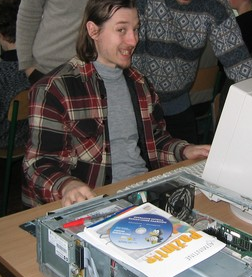

Dažnai žinomas kaip Mantiena.
Oficialiai dirba urėdijoje, prižiūri kompiuterius. Dalyvauja valstybiniuose atviro kodo programų pilotinio diegimo projektuose. Dažnai įvardijamas kaip didelis „OpenOffice“, „Linux“ ir printeriai specialistas.
Turi patirties:
Dalyvauja konsultantu Diegimo šventėse [InstallFest], kur ir diegiamas jo paties sukurtas Baltix (Mantix). Buvo Kaune, Panevėžyje, Utenoje, Šilutėje ... (kur tik nebuvo ;)
Vedęs, turi Tutę, Jonuką ir Mają (dar ir žmoną Eglę turi).